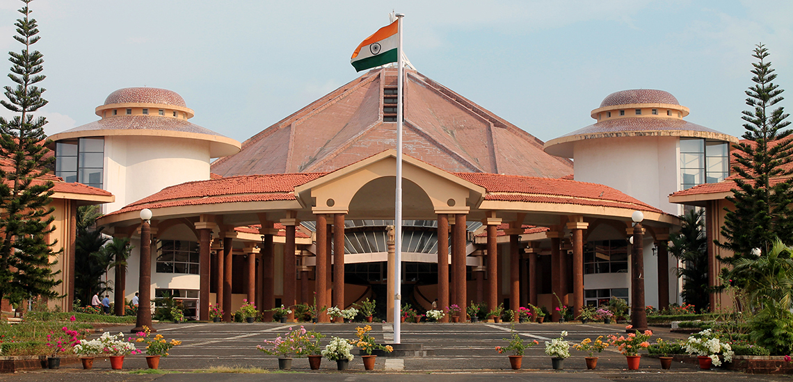

GOVERNMENT:
Goa's administrative capital is Panaji in English, Panjim also spelt as Pangim in Portuguese, and Ponjê in the local language. It lies on the left bank of the Mandovi river. The seat of the Goa Legislative Assembly is in Porvorim, across the Mandovi from Panaji. As the state comes under the Bombay High Court, Panaji has a bench in it. Unlike other states, which follow the model of civil laws framed for individual religions introduced in the days of Raj, the Portuguese Goa civil code, a uniform code based on the Napoleonic code, has been retained in Goa.
The Chief Minister heads the executive, which is made up of the party or coalition elected with a majority in the legislature. The Governor, the head of the state, is appointed by the President of India.
In March 2005, the assembly was dissolved by the Governor and President's Rule was declared, which suspended the legislature. The Congress Party and the Bharatiya Janata Party (BJP) are the two largest parties in the state. In the 2012 Vidhan Sabha Elections, the Bharatiya Janata Party along with the Maharashtrawadi Gomantak Party won a clear majority, forming the new government with Manohar Parrikar as the Chief Minister. Other parties include the United Goans Democratic Party, the Nationalist Congress Party.
In the 2017 assembly elections, the Indian National Congress gained the most seats, However, no party was able to gain a majority in the 40 member house. The BJP was invited to form the Government by Governor Mridula Sinha. The Congress claimed the use of money power on the part of the BJP and took the case to the Supreme Court. However, the Manohar Parikkar led Government to prove its majority in the Supreme Court mandated "floor test".
Unfortunately,MANOHAR Parikkar died on 17 March 2019 at the age of 63 from pancreatic cancer at his residence in Panaji. His death was announced by the president of India, Ram Nath Kovind.
Since then the government of Goa is under DR.Pramod Sawant.

ECONOMY:
Goa's state domestic product for 2020-2021 is estimated at $11.14 billion at current prices. Goa is India's richest state with the highest GDP per capita – two and a half times that of the country – with one of its fastest growth rates: 8.16% AS OF 2020-2021 Tourism is Goa's primary industry: it gets 12% of foreign tourist arrivals in India. Goa has two main tourist seasons: winter and summer. In winter, tourists from abroad (mainly Europe) come, and summer (which, in Goa, is the rainy season) sees tourists from across India. Goa's net state domestic product (NSDP) was around US$10.05 billion in 2020-2021
The land away from the coast is rich in minerals and ores, and mining forms the second largest industry. Iron, bauxite, manganese, clays, limestone, and silica are mined. The Mormugao port handled 31.69 million tonnes of cargo in 2007, which was 39% of India's total iron ore exports. Sesa Goa (now owned by Vedanta Resources) and Dempo are the lead miners. Rampant mining has been depleting the forest cover as well as posing a health hazard to the local population. Corporations are also mining illegally in some areas. During 2015–16, the total traffic handled by Mormugao port was recorded to be 20.78 million tonnes.
Agriculture, while of shrinking importance to the economy over the past four decades, offers part-time employment to a sizeable portion of the populace. Rice is the main agricultural crop, followed by areca, cashew, and coconut. Fishing employs about 40,000 people, though recent official figures indicate a decline of the importance of this sector and also a fall in the catch, due perhaps, to traditional fishing giving way to large-scale mechanised trawling.
Medium-scale industries include the manufacturing of pesticides, fertilisers, tyres, tubes, footwear, chemicals, pharmaceuticals, wheat products, steel rolling, fruits and fish canning, cashew nuts, textiles, brewery products.
Currently, there are 16 planned SEZs in Goa. The Goa government has recently decided to not allow any more Special Economic Zones (SEZs) in Goa after strong opposition to them by political parties and the Goa Catholic Church.
Goa is also notable for its low priced beer, wine, and spirits prices due to its very low excise duty on alcohol. Another main source of cash inflow to the state is remittance, from many of its citizens who work abroad, to their families. It is said to have some of the largest bank savings in the country.
In 1976 Goa became the first state in India to legalize some types of gambling. This enabled the state to levy taxes on gambling, thereby strengthening the economy.
Goa is the second state in India to achieve a 100 percent automatic telephone system with a solid network of telephone exchanges. As of September 2017, Goa had a total installed power generation capacity of 549.41 MW. Goa is also one of the few states in India to achieve 100 percent rural electrification